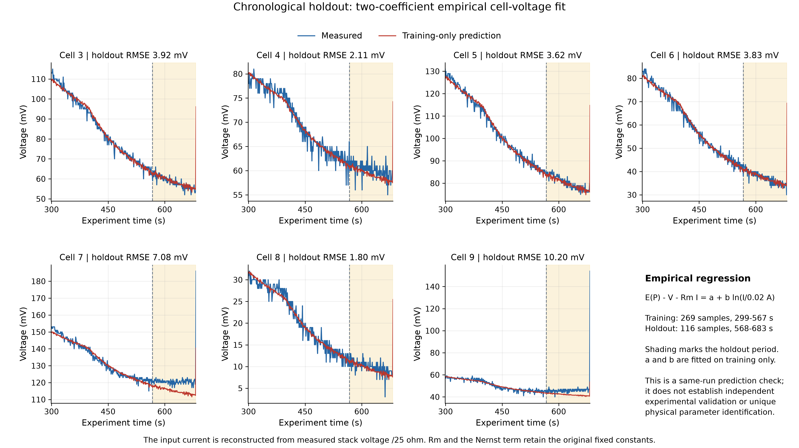

Partir des mesures du bancStart with bench measurements
Une pile PEMFC associe phénomènes électriques, circulation des gaz et gestion de l’eau. Le travail consistait à relier ces phénomènes aux mesures disponibles sur un petit stack pédagogique.A PEM fuel cell combines electrical behaviour, gas flow and water management. The work was to connect these processes to the measurements available on a small educational stack.
J’ai réalisé ce stage dans l’équipe Infinity du GIPSA-lab, à l’Université Grenoble Alpes, sous la supervision d’Emmanuel Witrant. Le banc comporte dix cellules dont les tensions sont suivies séparément. Les cellules 3 à 9 ont été retenues pour l’étude du fonctionnement actif.I completed this internship in the Infinity team at GIPSA-lab, Université Grenoble Alpes, under Emmanuel Witrant’s supervision. The bench has ten cells with individual voltage measurements. Cells 3 to 9 were selected for the active-operation study.
Le banc ne disposait pas de mesures de température ni de pression d’oxygène. Ces grandeurs devaient donc être supposées dans le modèle, ce qui limite l’identification des paramètres internes et les possibilités de commande fondées sur ces états.The bench did not provide temperature or oxygen-pressure measurements. These quantities therefore had to be assumed in the model, limiting identification of internal parameters and control based on those states.
Ajuster le modèle et vérifier ses limitesFit the model and check its limits
Un modèle empirique de tension par cellule a été ajusté aux mesures, puis complété par une étude analytique des dynamiques de pression et d’eau.An empirical per-cell voltage model was fitted to measurements, alongside an analytical study of pressure and water dynamics.
L’ajustement initial utilise une température fixe de 343,15 K, une pression partielle d’oxygène de 0,21 atm et une hydratation de membrane de 14. Certains coefficients n’étant pas identifiables séparément, leur ajustement ne suffit pas à leur donner une interprétation physique unique.The initial fit uses a fixed temperature of 343.15 K, an oxygen partial pressure of 0.21 atm and membrane hydration of 14. Some coefficients cannot be identified separately, so fitting them does not establish a unique physical interpretation.
L’analyse structurelle montre que le débit d’hydrogène seul ne permet pas de commander tous les états du modèle étudié. La tension seule ne permet pas non plus de tous les observer. Ces résultats et les capteurs manquants motivent l’étude d’une commande à partir des grandeurs électriques accessibles.The structural analysis shows that hydrogen flow alone cannot control all states of the model studied. Voltage alone cannot observe them all either. These results and the missing sensors motivate control using the electrical quantities that can be measured.
Distinguer ajustement et prédictionSeparate fitting from prediction
Sur les cellules 3 à 9, l’erreur quadratique moyenne de l’ajustement initial est comprise entre 2,0 et 11,3 mV. Un test chronologique complète ce résultat sur une partie des mesures tenue à l’écart de l’ajustement.For cells 3 to 9, the initial fit has a root mean square error between 2.0 and 11.3 mV. A chronological test adds a check on measurements held back from fitting.
Un modèle empirique à deux coefficients a été ajusté sur les 269 premiers échantillons de la fenêtre étudiée, puis évalué sur les 116 suivants. L’erreur de test est comprise entre 1,8 et 10,2 mV pour les sept cellules actives.A two-coefficient empirical model was fitted to the first 269 samples of the selected window, then evaluated on the following 116. Test error ranges from 1.8 to 10.2 mV across the seven active cells.
Ce test reste issu de la même expérience. Le courant est reconstruit à partir de la tension du stack et d’une résistance supposée de 25 Ω : il ne constitue donc pas une validation dynamique indépendante. Les essais d’un autre cycle en juillet permettent une comparaison dans d’autres conditions, sans établir à eux seuls la cause d’une dégradation.This test still comes from the same experiment. Current is reconstructed from stack voltage and an assumed 25 Ω resistance, so it does not constitute independent dynamic validation. A different operating cycle in July provides a comparison under other conditions, without establishing the cause of degradation on its own.

Une piste de commande à poursuivreA control approach to develop
La suite proposée repose sur un convertisseur boost et une régulation PI du courant du stack, afin d’agir sur un signal électrique accessible sans dépendre de tous les états internes de la pile.The proposed next step uses a boost converter and PI control of stack current, acting on an accessible electrical signal without relying on every internal fuel-cell state.
Cette architecture reste une proposition : les gains et la boucle fermée n’ont pas été validés sur le banc. La calibration du courant et des mesures supplémentaires de température et de pression d’oxygène seraient nécessaires pour poursuivre les essais et améliorer le modèle.This architecture remains a proposal: controller gains and closed-loop behaviour have not been validated on the bench. Current calibration and additional temperature and oxygen-pressure measurements would be needed to continue testing and improve the model.
Le rapport rassemble le modèle, les expériences et leurs limites. Le dépôt contient les programmes d’acquisition et de traitement, les données et les calculs utilisés pour vérifier les résultats présentés.The report brings together the model, experiments and their limits. The repository contains acquisition and processing programs, data and calculations used to check the reported results.